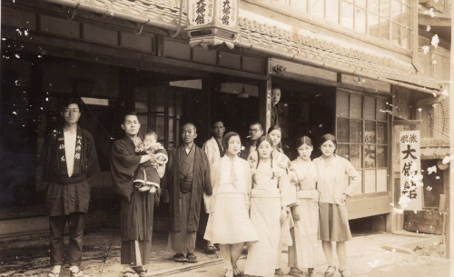
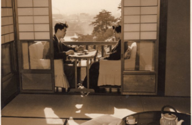
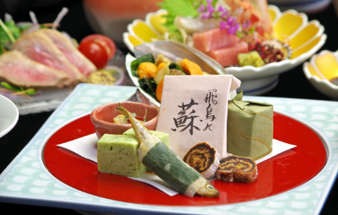

大正5年創業の由緒正しい観光旅館
大正5年に創業してからたくさんのお客様がお越しくださいました。
奈良の情景は少しずつ変わってきていますが、
大仏館の気持ちの良いおもてなしの精神は昔も今も変わらず
こだわりを持って代々受け継がれています。
- 昭和6年 大仏館外観
- 昭和6年 大仏館外観
- 昭和16年〜17年
大仏館前で「鹿せんべい」を
販売していました。 - この頃は、奈良公園へ向かう途中の旅館などで鹿せんべいを販売していました。
戦後からは、奈良公園内での販売が主流となりました。
- 昭和30年新築改装
- 昭和30年お部屋からの五重塔
- 昭和30年 この頃はお部屋から猿沢池が望めました
- 春日若宮おん祭り
-
12月15日から18日まで、古都奈良の一年最後を飾る伝統行事「春日若宮おん祭｣は平安時代より始まり、途絶えることなく守り継がれてきた由緒あるお祭りです。
「おん祭」といえば、一般的には昼の「お渡り」が有名です。お旅所におられる若宮様にお詣りする「田楽」等の芸能団体や「流鏑馬」｢大名行列」など県庁前より三条通りを春日大社に向けて時代絵巻のような行列がご覧いただけます。大仏館は、その「お渡り式」に参列される人々の「お支度所」としてご利用いただいております。
※写真は1958年(昭和33年)の春日若宮おん祭の日の大仏館の風景です。
-
- 貴重な吉野建て
- 一見3階建てに見える当館ですが実は6階建て、今では貴重な吉野建てのつくりとなっています。斜面に作られているので裏から見ると6階建てのタテ型構造になっています。そのためフロント・ロビーは4階にあり、迷われる方も度々です。
-

- 古代から伝わる珍しい
お料理や奈良の名物を… - 奈良名物の柿の葉寿司、茶粥など伝統のお料理はもちろん、新鮮な季節の食材を活かした料理長こだわりのお料理をお楽しみください。どこか懐かしさを感じられる当館自慢の会席コースは、目と舌でご堪能いただけます。
- 古代から伝わる珍しい
-
- 好立地ならではの楽しみ方
- 朝と夜の表情が全く違う奈良公園や猿沢池を散歩できる絶好の立地にあります。お昼は観光に、夜は月夜の散歩。様々な奈良の顔を楽しめます。
-
- 近隣の隠れ家的スポットを紹介
- 長年奈良で旅館を営んでいますので隠れ家スポットをご紹介できます。その中でも最近のアートなスポット「ならまち工房」。通りから路地へ一歩入れば心落ち着くアートな空間が続きます。そんな落ち着いたスポットや穴場を大仏館では紹介いたします。